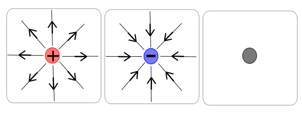

Projekt Edukacyjny
Opiekun projektu:
prof. Marek Golka
Uczestnicy:
- Paweł Poczobut
- Adrian Koźluk
- Maciej Czyżewski
-
- Jakub Szcześniak
- Krzysztof Małysa
Cele projektu:
- Poznanie praw elektromagnetyzmu
- Uświadomienie społeczeństwa o tym co to jest prąd, jak go wytworzyć itp.
- Poszerzanie własnych pasji i zaintersowań.
- Uzyskanie promocji do 3. klasy gimnazjum :-D
Plan prezentacji
- Część teoretyczna
- Elektrostatyka
- Prąd elektryczny
- Magnetyzm
- Część doświadczalna
- Odkrycie indukcji elektromagnetycznej Faradaya
- Zjawisko termoelektryczne
- Zjawisko fotowoltaniczne
- Ogniwa galwaniczne
Elektrostatyka
$\nabla\cdot\vec{E}=\frac{\rho}{\epsilon_0}$
$\nabla\times\vec{E}=\frac{\partial B}{\partial t}$
Ładunek elektryczny
Jest to nieodłączna właściwość cząstek elementarnych, z których składają się wszystkie ciała; stanowi źródło pola elektromagnetycznego, a przejawami jego obecności, ruchu i oddziaływania są wszystkie zjawiska elektryczne.
Występują 2 rodzaje ładunków, które umownie nazywamy dodatnimi i ujemnymi.
Jednostką ładunku jest kulomb $(C)$.
Ładunek jest skwantowany, czyli każdy ładunek $Q$ jest wielokrotnością pewnego ładunku elementarnego. Wobec tego każdy ładunek $Q$ można zapisać w postaci:
\begin{equation} Q=n\cdot e\end{equation}
gdzie:
- $e$ - ładunek elementarny, wartość bezwględna ładunku jednego elektronu
($e\approx 1,60 \cdot 10^{-19}\, C$)
- $n$ - liczba całkowita
Jeżeli w ciele znajduje się tyle samo ładunków ujemnych co dodatnich (ładunki dwóch rodzajów się równoważą i ciało ma zerowy ładunek wypadkowy), to mówimy, że ciało jest elektrycznie obojętne, a jeżeli w ciele znajduje się więcej ładunków któregoś rodzaju (ładunki się nie równoważą, więc ciało ma niezerowy ładunek wypadkowy), to mówimy, że ciało jest naładowane.
Ładunki na siebie oddziałują. Ładunki elektryczne o tych samych znakach się odpychają, a ładunki elektryczne o przeciwnych znakach się przyciągają.
Prawo Coulomba
\begin{equation}F =\frac{1}{4\pi\epsilon_0}\cdot\frac{q_1 \cdot q_2}{r^2} \end{equation}
Zasada zachowania ładunku
Ładunek jest zachowany, czyli algebraiczna suma ładunków w dowolnym odizolowanym od otoczenia układzie nie może ulec zmianie.
\begin{equation}\nabla\cdot\vec{J}=-\frac{\partial \rho}{\partial t}\end{equation}
Zasada superpozycji
Siła elektrostatyczna spełnia zasadę superpozycji, czyli jeśli mamy $n$ naładowanych cząstek, to oddziałują ona niezależnie w parach i siła wypadkowa $\vec{F}_{wyp.}$ działająca na dowolną z nich (np. $k$) jest równa sumie wektorowej:
\begin{equation}\vec{F}_{wyp.}=\sum_{i=1}^n \vec{F}_i,\end{equation}
gdzie $\vec{F}_i$ to siła z jaką $i$-ta cząstka oddziaływuje na $k$.
Pole elektryczne
Każdy ładunek wytwarza w przestrzeni wokół siebie pole elektryczne. Siła elektrostatyczna działająca na dowolny ładunek jest wywołana polem elektrycznym, wytworzonym przez inne ładunki w miejscu, w którym znajduje się rozważany ładunek.
Natężenie pola elektrycznego E, wytworzonego przez ładunek punktowy $Q$ w punkcie $P$ oddalonym od ładunku o $r$ definiujemy wtedy wzorem:
\begin{equation}\vec{E}=\frac{1}{4\pi\epsilon_0}\cdot\frac{Q}{r^3}\cdot\vec{r}\end{equation}
Pole elektryczne jest polem wektorowym. Jednostką natężenia pola elektrycznego jest $\frac{N}{C}$.
Graficzne przedstawienie kierunku i wartości natężeń pola elektrycznego umożliwiają linie pola elektrycznego. Wektor natężenia pola elektrycznego w dowolnym punkcie jest styczny do linii pola przechodzącej przez ten punkt. Gęstość linii pola w dowolnym obszarze jest proporcjonalna do wartości natężenia pola w tym obszarze. Linie pola są skierowane od ładunków dodatnich do ujemnych.
Pole elektryczne

http://upload.wikimedia.org/wikipedia/commons/thumb/2/
2a/Electric_Field_Lines.svg/600px-Electric_Field_Lines.svg.png
http://upload.wikimedia.org/wikipedia/commons/thumb/2/
2a/Electric_Field_Lines.svg/600px-Electric_Field_Lines.svg.png
Potencjał elektryczny
Potencjał elektryczny $\phi$ w punkcie $P$ jest dany wzorem:
\begin{equation}\phi(P)=\frac{W_{\infty\rightarrow P}}{q_0}\end{equation}
gdzie $W_{\infty\rightarrow P}$ to praca potrzebna na przenisienie ładunku próbnego $q_0$ z nieskończoności do punktu P.
Potencjał elektryczny oraz pole elektryczne powiązane są następującą zależnością:
\begin{equation}\vec{E}=-\nabla\phi\end{equation}
Strumień elektryczny
Strumień elektryczny $\Phi_E$ przez daną powierzchnię $S$ definiujemy wzorem:
\begin{equation}\Phi_E = \int_S \vec{E}\cdot d\vec{S}\end{equation}
Prawo Gaussa
Prawo Gaussa mówi o tym, że strumień pola elektrycznego przez dowolną zamkniętą przestrzeń (zwaną powierzchnią Gaussa) jest proporcjonalny do całkowitego ładunku ograniczonego przez ta powierzchnię.
- Postać całkowa
\begin{equation}\int_S \vec{E}\cdot d\vec{S}=\frac{Q_{wewn.}}{\epsilon_0}\end{equation}
- Postać różniczkowa
\begin{equation}\nabla\cdot\vec{E}=\frac{\rho}{\epsilon_0}\end{equation}
Prąd elektryczny
Prąd elektryczny
Prąd elektryczny - uporządkowany ruch ładunków elektrycznych.
$I$ - natężenie prądu elektrycznego $[A]$.
\begin{equation}I=\frac{dq}{dt}\end{equation}
$J$ - gęstość prądu elektrycznego. $J=\frac{I}{S}$
Podział materiałów pod względem przewodnictwa
- Przewodniki (metal)
- Półprzewodniki (semiconductors)
- Izolatory (insulators)
Półprzewodniki
Półprzewodniki dzielimy na:
- Półprzewodniki samoistne - półprzewodniki, których materiał jest idealnie czysty, bez żadnych zanieczyszczeń struktury krystalicznej. Koncentracja wolnych elektronów w półprzewodniku samoistnym jest równa koncentracji dziur.
- Półprzewodniki domieszkowane:
- Półprzewodniki typu $n$
- Półprzewodniki typu $p$
Opór elektryczny
Opór elektryczny (rezystancja) $R$ przewodnika dany jest wzorem:
\begin{equation}R=\frac{U}{I}\end{equation}
gdzie:
- $U$ - różnica potencjałów na końcach przewodnika
- $I$ - natężenie prądu przepływającego przez przewodnik
Jednostką oporu elektrycznego w układzie SI jest om ($\Omega$). $1\Omega=1\frac{V}{A}$
Prawo Ohma
Prawo Ohma głosi, że natężenie prądu przepływającego przez przewodnik jest proporcjonalne do napięcia do niego przyłożonego. Czyli:
\begin{equation}\frac{U}{I}=const.=R\end{equation}
gdzie $R$ to opór elektryczny. Prawo to jest równoważne następującemu równaniu:
\begin{equation}\vec{J}=\sigma\vec{E} \end{equation}
zwanego prawem Ohma w postaci różniczkowej, gdzie
- $\vec{J}$ - gęstość prądu
- $\sigma$ - przewodność właściwa
- $\vec{E}$ - natężenie pola elektrycznego
1. prawo Kirchhoffa
Suma natężeń prądów wpływających do węzła jest równa sumie natężeń prądów wypływających z tego węzła.
\begin{equation}I_1+I_2+I_3=I_4+I_5\end{equation}
Prawo to jest bezpośrednim skutkiem zasady
zachowania ładunku(równania ciągłości)
2. prawo Kirchhoffa
W zamkniętym obwodzie suma spadków napięć na oporach równa jest sumie sił elektromotorycznych występujących w tym obwodzie:
\begin{equation}\sum_k \mathscr{E}_k=\sum_i I_iR_i\end{equation}
gdzie:
- $\mathscr{E}$- siła elektromotoryczna
- $I$ - natężenie prądu
- $R$ - opór elektryczny
Magnetyzm
$\nabla\cdot\vec{B}=0$
$\nabla\times\vec{B}=\mu_0\vec{J}+\mu_0\epsilon_0\frac{\partial\vec{E}}{\partial t}$
-
$\vec{B}$ - wektor indukcji pola magnetycznego $\left[ T\right]$
$[T]$ - tesla, $\left[T\right] = \frac{N}{A\cdot m}$
-
$\Phi_B$ - strumień indukcji pola magnetycznego $[Wb]$
\begin{equation} \Phi_B = \int_S \vec{B}\cdot d\vec{S} \end{equation}
- $\mu$ - przenikalność magnetyczna ośrodka
Siła Lorentza
$\vec{F}_B = q(\vec{v}\times\vec{B})$
- $\vec{v}$ - wektor prędkości
- $q$ - ładunek
- Siły magnetyczne
nie wykonują pracy!
Prawo Biota-Savarta
$d\vec{B}(r)=\frac{\mu_0}{4\pi}\frac{I\,d\vec{l}\times\vec{r}}{r_3}$
- $dl$ - element przewodnika
- $r$ - odległość
- $I$ - natężenie prądu
Prawo Ampère'a
- Postać całkowa
\begin{equation}\oint_{\Gamma}\vec{B} \cdot d\vec{l}=\mu_0 I_p\end{equation}
- Postać różniczkowa
\begin{equation}\nabla\times\vec{B}=\mu_0\vec{J}\end{equation}
Magnetyzm materii
- Ferromagnetyzm - zjawisko, w którym materia wykazuje własne, spontaniczne namagnesowanie. Jest jedną z najsilniejszych postaci magnetyzmu i jest odpowiedzialny za większość magnetycznych zachowań spotykanych w życiu codziennym.
- Paramagnetyzm - zjawisko magnesowania się makroskopowego ciała w zewnętrznym polu magnetycznym w kierunku zgodnym z kierunkiem pola zewnętrznego. Substancja wykazująca takie własności to paramagnetyk, jest on przyciągany przez magnes, jednak znacznie słabiej niż ferromagnetyk.
- Diamagnetyzm- zjawisko polegające na indukcji w ciele znajdującym się w zewnętrznym polu magnetycznym pola przeciwnego, osłabiającego działanie zewnętrznego pola.
Magnetyzm materii
Dipol elektryczny
http://upload.wikimedia.org/wikipedia/
commons/thumb/d/df/VFPt_dipole_electric.svg/
200px-VFPt_dipole_electric.svg.png
Model Ampere'a
http://en.academic.ru/pictures/enwiki/76/
LoopCurrentMagneticMoment.png